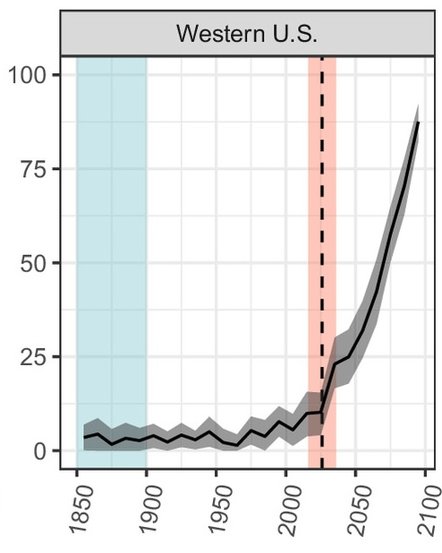
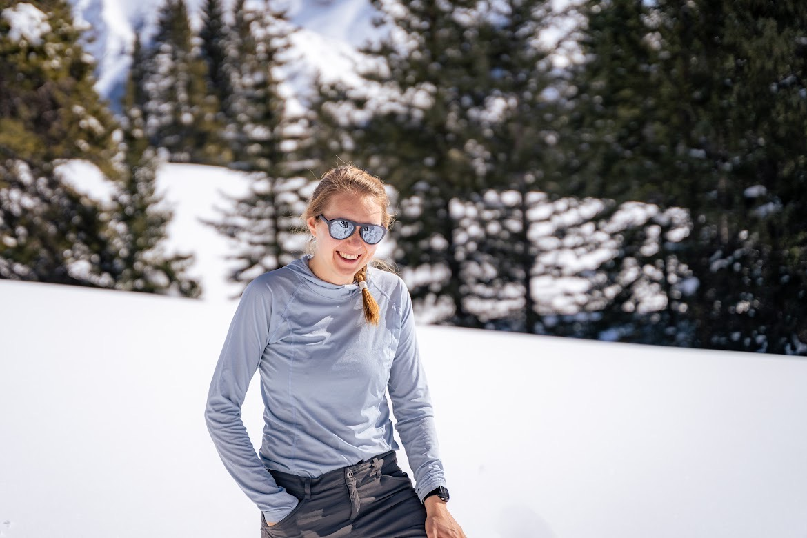
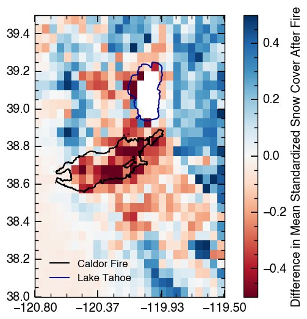
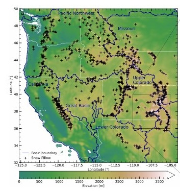

PNAS · 2021
Attributing snow drought to climate change
Spring 2026 was one of the lowest-snow years on record in the Western United States. How much of this was due to anthropogenic climate change?
Read the paper
We study climate science, the cryosphere, and hydrology.
Our group works on nonstationarity in snow and water systems, both the problems it causes and the potential solutions. Our work spans the drivers of snow droughts, post-fire hydrology, and machine learning for snow observation.
We are based in the Department of Earth Sciences at Montana State University and are friends of the Central Sierra Snow Laboratory.

Spring 2026 was one of the lowest-snow years on record in the Western United States. How much of this was due to anthropogenic climate change?
Read the paper
Observations across the 2021 Caldor Fire burn scar show how vegetation loss and topography control where snow accumulates and how fast it melts after a megafire.
Read the paper
Warming will erode the ability of today's snow stations to represent the western United States snowpack. Pairing stations with machine learning keeps snow estimates reliable through the end of the century.
Read the paperI study climate science and the cryosphere. Most of my work deals with nonstationarity in snow and water systems, both the problems this causes and the potential solutions. Specific topics include the atmospheric drivers of snow droughts, post-fire hydrology, and machine learning applications in snow pattern repeatability shift. I am generally interested in how nonstationarity impacts environmental observations and in particular our ability to understand change.
I grew up in Ann Arbor, Michigan. I earned undergraduate and masters degrees at Stanford University as part of the Bob & Norma Street Environmental Fluid Mechanics Laboratory, where I worked on oscillatory wave-current boundary layers. I earned my PhD from the UC Berkeley Department of Environmental Science, Policy, and Management, where I was a DOE Computational Sciences Graduate Fellow. I enjoy running, soccer, the outdoors, and word games.
Anna is a Master's student in the department of earth sciences studying the effects of wildfire management policies on landscape scale snow retention and water availability. After growing up in North Idaho, they received their undergraduate degree in Mechanical Engineering from Montana State University in 2019. During their early career in project management, Anna spent their spare time ski instructing, volunteering at Stafford Animal Shelter, and leading youth crews with Idaho Trails Association. Anna is an avid skier, backpacker, home cook, and TTRPG player. They love hanging out with their two dogs Rook and Arlo and her cat Beans on Toast.
Rachel is a PhD student interested in using modeling to explore complex questions related to snow and climate. With B.S. and M.S. degrees from the University of North Carolina at Chapel Hill, she has research experience in environmental topics such as wildfire, flooding, drought, and energy systems. She also has worked in outdoor instruction, including teaching skiing, backpacking, and climbing. Her love for the outdoors, particularly the mountains, drives her research.
I am not currently recruiting graduate students to join the group.
Prospective postdocs interested in developing funding applications together (e.g., Climate & Global Change Postdoctoral Program), please email me with your CV and a one-page description of your research interests, your goals, and how your background relates to work done in the group.
See Google Scholar for a complete list.